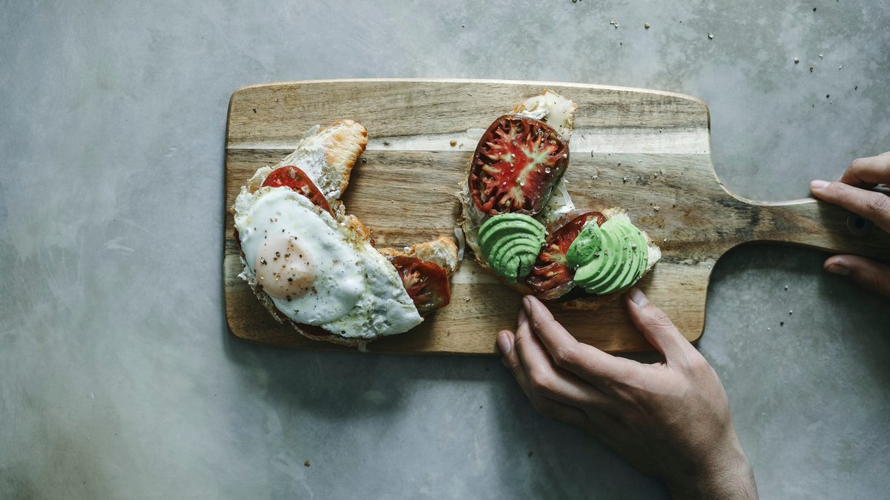

Советы для мужчин, как избавиться от перхоти | Clear
 Skip to content поиск Close Search Назад Женщины Мужчины Продукты Уход за кожей головы О нас Наша философия | Clear Социальный эксперимент | Clear Экспертиза Clear Стань стойким с Clear Показать все Стань стойким с Clear Истории стойкости Как выработать стойкость? Как выработать стойкость Close Navigation По типу продукции Шампунь Кондиционер По типу проблемы Жирная кожа головы Зуд кожи головы Поврежденные и сухие волосы Сухая кожа головы Детокс Classico Все продукты По типу статей Женщинам Мужчинам Показать все статьи Opens in new window
1 1
ЖЕНЩИНЫ МУЖЧИНЫ Opens in new windowСоветы для мужчин, как просто и навсегда избавиться от перхоти
Чтобы решить проблему перхоти навсегда, нужно разобраться, что она из себя представляет. Мы расскажем, что такое перхоть, развеем несколько мифов и дадим практические рекомендации, как лучше всего организовать уход за волосами и кожей головы. У нас есть решение для любого типа волос и состояния кожи головы.
( 50 статей ) ЧТО ТАКОЕ ПЕРХОТЬ? ЧТО ВЫЗЫВАЕТ ПЕРХОТЬ? Восстановление поврежденных волос. Профессиональные методы восстановления волос Укрепление волос от выпадения Уход за волосами для подростков Уход за сухими мужскими волосами УЗНАТЬ БОЛЬШЕ Preloader Наверх Поделиться ссылкой Opens in new window Opens in new window Opens in new window Общие Вопросы Политика о персональных данных Opens in new window Правовое уведомление Opens in new window Информация в отношении COOKIE-файлов Opens in new window Связаться с нами Opens in new window Правила использования Карта сайта +7 800 200 1 200 Opens in new window Russia Opens in new window © 2021 Unilever. Все права защищены. Opens in new window
Юридический и почтовый адрес:
ООО «Юнилевер Русь» 123022,
Электронная почта: communications.russia@unilever.com
г. Москва, ул. Сергея Макеева, д. 13
ИНН: 7705183476